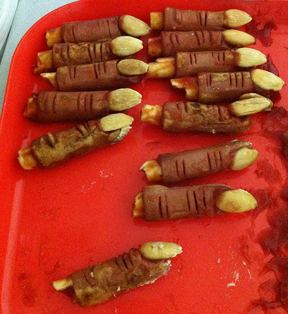
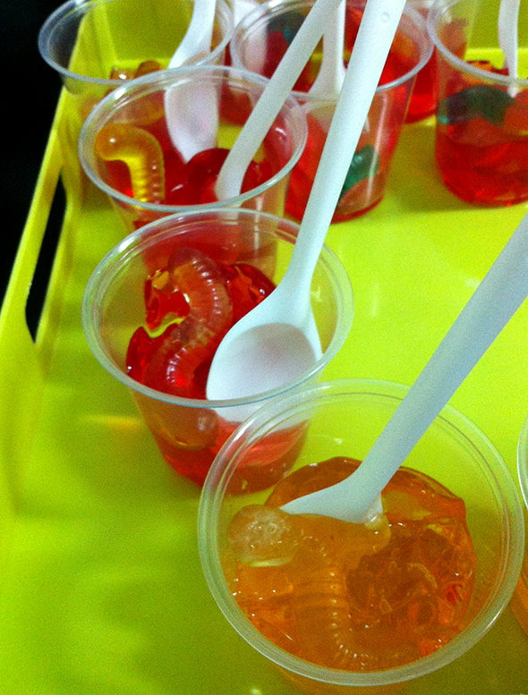

Wurst mit Mandel.
Salchicha con almendra.
Sausage with almond.


Wurst mit Mandel.
Salchicha con almendra.
Sausage with almond.


Eierschalen Gespenster. Vorsichtig wäscht man die Eierschalen mit Seifenwasser und läßt dann sie trockenen. Mit einem Filzstift kann man schaurige Gespenstergesichter aufmalen. An der oberen Seite…
Weiterlesen →
Wackelpeter mit einem Gummiwurm. Lecker! Gelatina con gusanos de chuche. Que rico! Jelly with candy worm. Jummi!
Weiterlesen →
Ich sehe im Internet, dass die Vorbereitungen für Halloween bereits im Gange sind, oder zumindest die Suche nach Ideen. Hier ist ein kleines Mädchen- Kostüm der…
Weiterlesen →
Una caja con una súper sorpresa de Halloween. Gracias Josefa! A box with a super Halloween surprise. Thank you Josefa! Eine Box mit einer super Halloween…
Weiterlesen →
Halloween Diese sympathisch kleinen Gespenster sind die perfekte Halloween Deko. Man malt die Eicheln mit weißer Farbe an und die Hütchen zurück auf die Eicheln. Dann…
Weiterlesen →